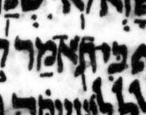

{kind=link}

| תֹ֖אמַר תֹ֭אמַר |
35:14 | טרחא not דחי in μL, says BHQ but not WLC |
In μY, the mark we would charitably interpret as דחי is very far forward: it is even a bit left of center. As is often the case, this displacement from the expected location can perhaps be blamed on a ל ascender encroaching from the line below. In μL and μA, the same ל encroachment occurs, but by mere chance leaves space for דחי in the expected prepositive location.
It is challenging for us moderns to distinguish, in transcription, between the דחי, the טרחא, the געיה, and the מרכא. One wonders whether this would have seemed challenging to the Tiberian Masoretes or even the later carriers of their tradition such as the naqdan of μY. Although the Masoretes are characterized by (indeed famous for) a punctilious concern for explicitness, it may be that they had something of a blind spot when it came to distinctions that seemed obvious to them from context but are no longer obvious to us, particularly as understanding of the poetic cantillation system has retracted down to a very few experts, none of whom seem to have been consulted in the production of BHQ Job.
U — M — μL (page 407A, col 2, line 12):
μA (Aleppo) (page 279v, col 1, line 5, word 3):

μY (Cambridge 1753) (page 83A, col 1, line 3, word 7):
